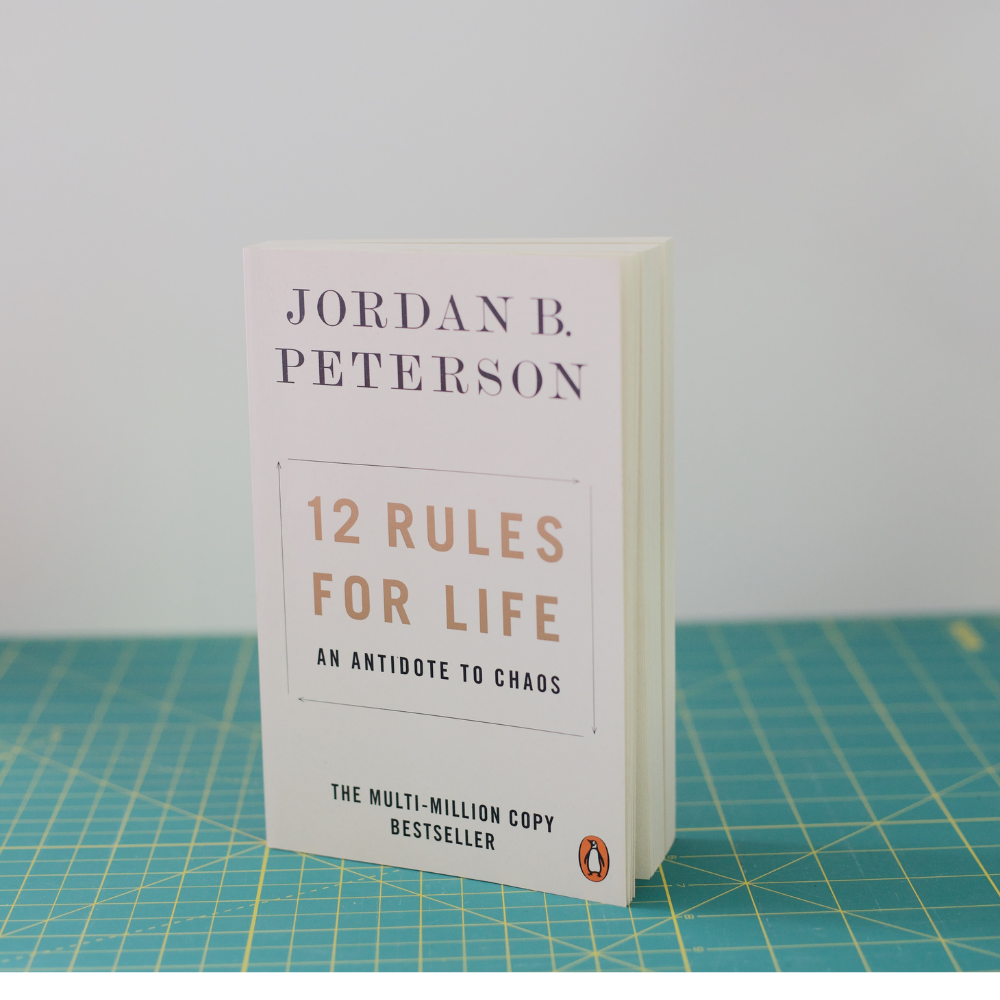

Book of the Month: 12 Rules for Life by Jordan Peterson
Unveiling the transformative wisdom of '12 Rules for Life'
In the profound pages of "12 Rules for Life" by Jordan Peterson, readers embark on a transformative journey that transcends mere self-help. Each rule is a beacon of wisdom, offering practical guidance and philosophical insights to navigate the complexities of life. The book provides a roadmap for personal growth, resilience, and the pursuit of a meaningful existence. "12 Rules for Life" is not just a book; it's a guide to cultivating a richer, more fulfilling life.
Buy book Learn moreFeatured Books
"Atomic Habits" by James Clear explores the transformative power of tiny changes and the compounding effect of small habits, offering practical insights and strategies to build and sustain positive habits while breaking free from detrimental ones.
"Good to Great" by Jim Collins examines the factors that differentiate companies that achieve sustained greatness from those that don't, identifying key principles and leadership strategies that propel organizations to excellence.
Want to recommend a book? Reach out to us and share your favorite self-help gems and empower others!